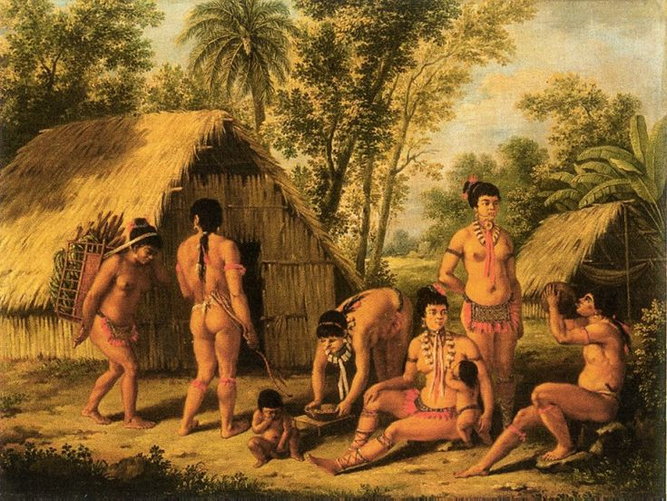

Precolombina
Pueblos Indígenas
Antes de la llegada de los europeos, Nicaragua estaba habitada por diversas culturas indígenas, como los nahuas (en el occidente) y los Miskitos, sumos y ramas (en la costa atlántica). Estos pueblos tenían estructuras organizativas y desarrollaron formas de agricultura, comercio y religión propias.
